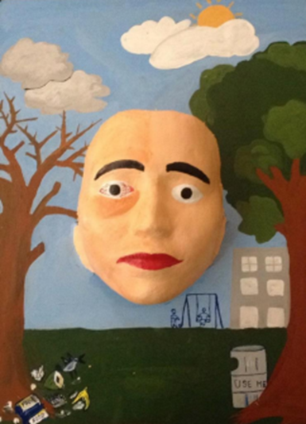

Project information
Project 2
Course Code and Name: MSJ11211 Mass Communication
Project Name: Mask Making
Topic: Broken Windows Theory
Date of Project: Spring 2019
Project Description:
Students were required to create a face mask based on a specified theme as part of this course. The mask's theme was "broken windows theory," which was the term’s Curriculum Integration topic. This was a group project that served as the course's final project. The masks were created with plaster of Paris and water. Sumiya Sultana and Jinnat Areefen, two of my group mates, and I agreed to make this mask for my face. They applied a thin layer of Vaseline on Jannat’s face first so that the mask could be easily removed once it had dried. They then broke the plaster into small pieces, wet them with water, and placed them one by one on Jannat’s face until the plaster covered my entire face. Sumaiya then smoothed the plaster on Jannat’s face, making the mask’s surface consistent. We waited until the mask was completely dried before removing it. We were able to remove the mask from face with a little pull. We placed the mask in the corner of a room to settle for the night. I painted the masks according to our concept the next day, after they had hardened, and applied the proper decorations such as green trees, leaves, and a house. The masks were again left to dry overnight. I held our masks on the day of the presentation as we explained our project to our renowned professors and peers.
Project
Justification:
The CI theme “Broken Windows Theory”, which was being
introduced in 1982, says that disorder and crime are linked, and that disorder
can have a negative impact on society, leading to a high prevalence of offences
and crimes. Broken Windows is described as a literal illustration of a broken
window in an essay by James Q. Wilson and George L. Kelling. When describing
the idea, they use the example of a broken window to illustrate what they are
talking about: they basically argue that if there is a broken window somewhere
and no one does anything to fix it, then other windows will be broken. Broken
Windows is based on the premise that by cracking down on minor types of crime,
criminals will stay away from that area, resulting in a safer environment for
everyone involved.
Project
|  |
Our Theme: Survive Vs. Live
CI Theme:
In this semester CI theme was ‘Broken Windows Theory’. In the 1982 article "Broken Windows," two social scientists James Q. Wilson and George L. Kelling developed the Broken Windows idea for the first time. The analogy of broken windows is used to describe this hypothesis, which states that displays of disorder in a neighborhood limit residents’ attempts to demonstrate social control. This theme mean that which is forbidden to humans. They do it more. The Broken Windows theory is based on the concept that any type of urban blight — a broken window, graffitied walls, trash on the streets, and so on – causes no harm to a neighborhood provided it is swiftly fixed. If, on the other hand, it is left unattended, it indicates a lack of care in the community, the kind of environment in which residents are free to abandon any ideals of concern. The first stage of damage and decay is physical, but the second stage is psychological. When James Q. Wilson and George L. Kelling published “Broken Windows: The Police and Neighborhood Safety" in the Atlantic Monthly in 1982, it became well known as the Broken Windows theory. The reasons why tiny neighborhood snubs should not be overlooked were outlined in the article: "A property has been abandoned, and a window has been damaged. Adult cease criticizing boisterous children, and the children become more rowdy as they grow older. Families disband, and single adults take their place. Teenagers congregate outside the corner store. They refuse to move when the merchant begs them to do so. Fights take place. Litter builds up over time. People begin to drink in front of the supermarket; eventually, an inebriated individual slumps on the pavement and is permitted to sleep it off. Panhandlers approach pedestrians"
My message:
The core message of this project is to understand how our trash impacts the environment. For a long time, the garbage that humans produce has been harmful to our environment. Humans produce far too much garbage and are unable to dispose of it in a sustainable way. Our oceans and landfills are overflowing with waste that isn't biodegradable or can't be recycled adequately. In certain places of the world, the burning of huge, open piles of garbage emits dangerous quantities of carbon dioxide, a greenhouse gas that is warming our planet. Our negligence puts human health at risk. We continue to produce vast amounts of rubbish and fail to properly dispose of it, which will ultimately be our undoing, as it is for the environment and wildlife in the eco-system, we all share. With the way we handle our planet, we cannot prevent or encourage lifespan. The more emissions we make as a result of the amount of waste we generate, the longer we are affected.
Lay out:
Our project plan was to show the side effects of nature due to trash/garbage. people cannot live their life because of the bad effect of nature. On the other hand, people create the bad effect of nature. Poor waste management leads to climate change and air pollution, as well as having a direct impact on a variety of ecosystems and species. Landfills, which are considered the last resort in the waste management hierarchy, produce methane, a potent greenhouse gas connected to global warming. I wanted to make the two side of mask so that one side will show the bad effect which is surviving and another one is good effect of nature which is living properly. I did draw this which is show the natural effects. I did add some objects on the board. Which is about the nature. I did choose the acrylic colors and these was specific colors- green, red, sky blue, brown, yellow. my plan was people who live properly, they can lead their healthy life and we are just surviving for our life. It’s the healthy way. So, we became sick and unhealthy day by day. Cause poor waste management leads to climate change and air pollution, as well as having a direct impact on a variety of ecosystems and species. Landfills, which are considered the last resort in the waste management hierarchy, produce methane, a potent greenhouse gas connected to global warming.
Painting & Installation:
We began by painting the face mask in this section. The mask is painted with two sides of emotions: a happy mood face with the white healthy eyes to represent nature, and with red eyes to represent result of environmental damage. The mask was then placed on the board. the board was black, so we painted on it and made joyful and sad versions of the environment. We painted two trees on each side. The tree on the left side is not healthy because people are dumping dirty garbage in front of trees, which having an adverse effect on the environment. On the other side the tree on right side is green and fresh with beautiful clear weather cause the people are using bin for throwing garbage. As a result, the balance of the environment is being maintained.
17
We did not face any major problem while painting and making masks. We were completely confident with our project theme. When all the painting is done we wait for the mask with board to dry. After the overnight dries, we take it to the exhibition.
Exhibition:
The exhibition at Bangladesh Shilpakala Academy began on April 27th, 2019. It was a fantastic experience because it was the first time something we created was displayed in such a large national art exhibition venue. The most successful aspect of the CI program is the display. Because, prior to the exhibition, students must actively participate in their curriculum in order to develop something creative that they can display in front of an audience. The audience included persons of various ages and socioeconomic groups. Despite the fact that many of them were ULAB students, instructors, and staff. The location was ideal for the exhibition because it is in the center of town and is easily accessible to everyone. Also, art enthusiasts are accustomed to visiting Shilpakala Academy, therefore the location is ideal in our opinion. My parents went to my exhibition. It seemed to me more special because it was the first exhibition of my work and my parents were at this exhibition.
Feedback:
We talk with four individuals from the audience. We listened to their suggestions because they were all students. As a result, people will be able to readily link with the artwork and the CI forum's topic. We received mostly favorable responses, and people seemed to understand the theme of the artwork. Faria Islam, an IUB student who enjoys going to exhibits. We spoke with her and she expressed her admiration for the artwork. "Our environmental problems must be addressed quickly, and first and foremost, people must modify their behavior," she continued, "otherwise we will confront a large number of problems very soon." Then we spoke with Nian Hossain, a member of the ULAB Art & Photography Club, who admires the artwork's simplicity and believes it represents the current environmental crisis. Another ULAB student, Amman Hossain, comprehended the concept of the artwork, but he read the color combination differently. He explained the meanings of cyan, red, blue, and green to us.
Realization:
After doing this project, we learn that communicating a message via art is not simple. Before creating any artwork, you must consider many points of view. You may not be able to satisfy everyone, but you should strive to provide a place for the audience to consider your product in a new light. Doing a project with painting, specify the theme with colors, understand the meaning of colors was not easy. It was challenging. We'll try to paint the face more smoothly if we have the chance to do it again.
In this project, after talking with a number of people, we realized that we concluded that the message we meant to send was very obvious to them. Our main goal was to raise environmental awareness among the general public. As a result, we decided to undertake this initiative in order for individuals and children to have a better understanding of what is occurring in our environment and why our environment is very important for our future. Finally, I can say that, in our group everyone participate equally and everyone worked really hard for doing this project.
Learnings and outcomes:
The mask was made on my face. Since I had never done this before, it was challenging for me. I was little nervous and wondered if I would be able to bring the actual message through the mask or not. But my group members have helped me to make it happen. If we remake it again, we'll first learn about color theory so that we may utilize more colors to communicate the theme messages. Almost every phase of the project went according to plan. We had a lot of fun working together and learned a lot about leadership and teamwork.